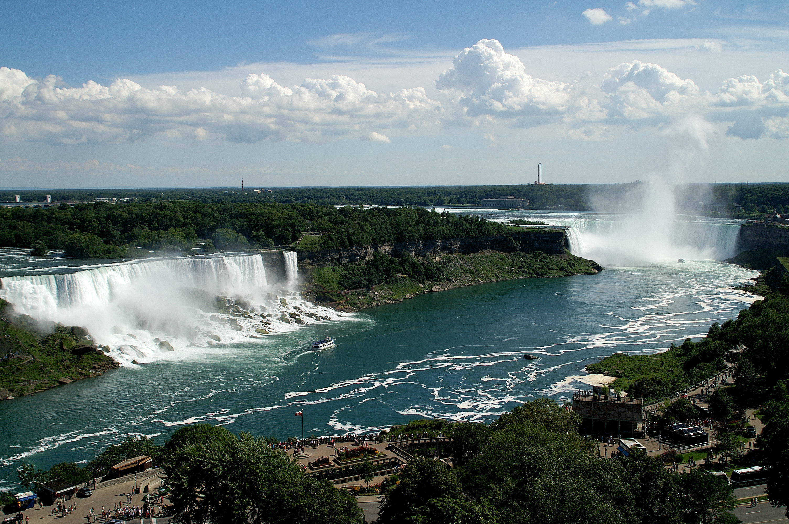

Niagara Falls
Niagara Falls is a group of three waterfalls at the southern end of Niagara Gorge, between the Canadian province of Ontario and the US state of New York. From largest to smallest, they are Horseshoe Falls (also known as Canadian Falls), American Falls and Bridal Veil Falls. Horseshoe Falls straddle the international border between Canada and the United States, while American Falls and Bridal Veil Falls lie entirely within the United States. Bridal Veil Falls are separated from Horseshoe Falls by Goat Island and from American Falls by Luna Island.
Located on the Niagara River, which drains Lake Erie into Lake Ontario, the combined falls have the highest flow rate of any waterfall in North America that has a vertical drop of more than 50 metres (160 ft). During peak daytime tourist hours, more than 168,000 m3 (six million cubic feet) of water goes over the crest of the falls every minute.[2] Horseshoe Falls is the most powerful waterfall in North America, as measured by flow rate.
The falls are 27 kilometres (17 mi) north-northwest of Buffalo, New York, and 121 kilometres (75 mi) south-southeast of Toronto, between the twin cities of Niagara Falls, Ontario, and Niagara Falls, New York. Niagara Falls was formed when glaciers receded at the end of the Wisconsin glaciation (the last ice age), and water from the newly formed Great Lakes carved a path through the Niagara Escarpment en route to the Atlantic Ocean.
Marineland
Marineland (official name Marineland of Canada Inc.), is a themed amusement park and zoo in Niagara Falls, Ontario, Canada. Opened in 1961, the park has roller coasters and a triple tower ride, along with marine shows and exhibits of dolphins, walruses, sea lions, an orca, and beluga whales. The park also keeps bears, deer and other land animals. The park's keeping of sea mammals is controversial and the park is involved in several lawsuits over the practice. The park does not release annual attendance figures. Published amounts range from 250,000 to 500,000 annually.
More Sites of interest in Ontario